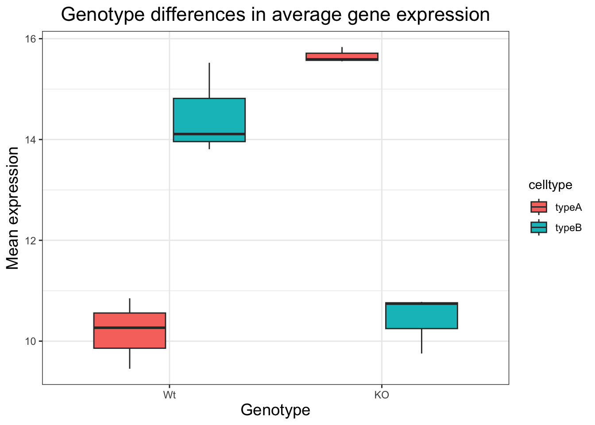

library(ggplot2)
load("data/new_metadata.RData")
ggplot(new_metadata) +
geom_boxplot(aes(x = genotype, y = samplemeans, fill = celltype)) +
ggtitle("Genotype differences in average gene expression") +
xlab("Genotype") +
ylab("Mean expression") +
theme_bw() +
theme(axis.title = element_text(size = rel(1.25))) +
theme(plot.title=element_text(hjust = 0.5, size = rel(1.5)))Exercise-2: Boxplot
Exercise 2: Boxplots
A boxplot provides a graphical view of the distribution of data based on a five number summary:
- The top and bottom of the box represent the (1) first and (2) third quartiles (25th and 75th percentiles, respectively).
The line inside the box represents the (3) median (50th percentile).
The whiskers extending above and below the box represent the (4) maximum, and (5) minimum of a data set. The whiskers of the plot reach the minimum and maximum values that are not outliers.
In this case, outliers are determined using the interquartile range (IQR), which is defined as: Q3 - Q1. Any values that exceeds 1.5 x IQR below Q1 or above Q3 are considered outliers and are represented as points above or below the whiskers.
- Boxplot
Generate a boxplot using the data in the new_metadata dataframe. Create a ggplot2 code chunk with the following instructions:
1. Use the geom_boxplot() layer to plot the differences in sample means between the Wt and KO genotypes.
2. Use the fill aesthetic to look at differences in sample means between the celltypes within each genotype.
3. Add a title to your plot.
4. Add labels, ‘Genotype’ for the x-axis and ‘Mean expression’ for the y-axis.
5. Make the following theme() changes:
Use the
theme_bw()function to make the background white.Change the size of your axes labels to 1.25x larger than the default.
Change the size of your plot title to 1.5x larger than default.
Center the plot title.
Solution
2. Changing the order of genotype on the Boxplot
Let’s say you wanted to have the “Wt” boxplots displayed first on the left side, and “KO” on the right. How might you go about doing this?
To do this, your first question should be - How does ggplot2 determine what to place where on the X-axis? The order of the genotype on the X axis is in alphabetical order. To change it, you need to make sure that the genotype column is a factor. And, the factor levels for that column are in the order you want on the X-axis.
1. Factor the new_metadata$genotype column without creating any extra variables/objects and change the levels to c("Wt", "KO")
2. Re-run the boxplot code chunk you created for the “Boxplot” exercise above.
3. Changing default colors
new_metadata$genotype <- factor(new_metadata$genotype, levels=c("Wt","KO"))
ggplot(new_metadata) +
geom_boxplot(aes(x = genotype, y = samplemeans, fill = celltype)) +
ggtitle("Genotype differences in average gene expression") +
xlab("Genotype") +
ylab("Mean expression") +
theme_bw() +
theme(axis.title = element_text(size = rel(1.25))) +
theme(plot.title=element_text(hjust = 0.5, size = rel(1.5)))
You can color the boxplot differently by using some specific layers:
1. Add a new layer scale_color_manual(values=c("purple","orange")).
- Do you observe a change?
2. Replace scale_color_manual(values=c("purple","orange")) with scale_fill_manual(values=c("purple","orange")).
Do you observe a change?
In the scatterplot we drew in class, add a new layer
scale_color_manual(values=c("purple","orange")), do you observe a difference?What do you think is the difference between
scale_color_manual()andscale_fill_manual()?
3. Back in your boxplot code, change the colors in the scale_fill_manual() layer to be your 2 favorite colors.
- Are there any colors that you tried that did not work?
Solution
ggplot(new_metadata) +
geom_boxplot(aes(x = genotype, y = samplemeans, fill = celltype)) +
ggtitle("Genotype differences in average gene expression") +
xlab("Genotype") +
ylab("Mean expression") +
theme_bw() +
theme(axis.title = element_text(size = rel(1.25))) +
theme(plot.title=element_text(hjust = 0.5, size = rel(1.5))) +
#We can also use hex color values to choose colors
scale_fill_manual(values=c("#F67280", "#355C7D"))The materials in this lesson have been adapted from work created by the (HBC)\](http://bioinformatics.sph.harvard.edu/) and Data Carpentry (http://datacarpentry.org/). These are open access materials distributed under the terms of the [Creative Commons Attribution license](https://creativecommons.org/licenses/by/4.0/) (CC BY 4.0), which permits unrestricted use, distribution, and reproduction in any medium, provided the original author and source are credited.